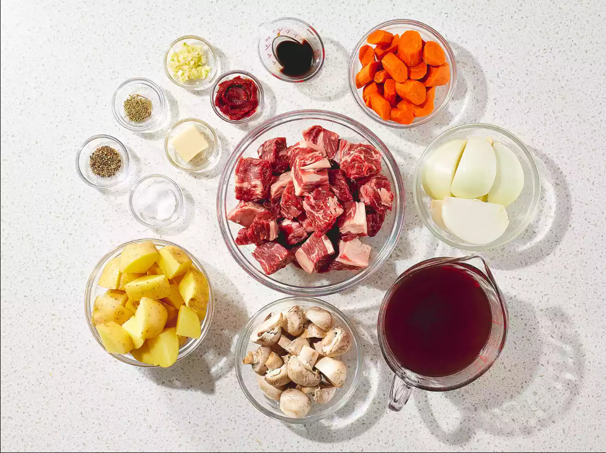
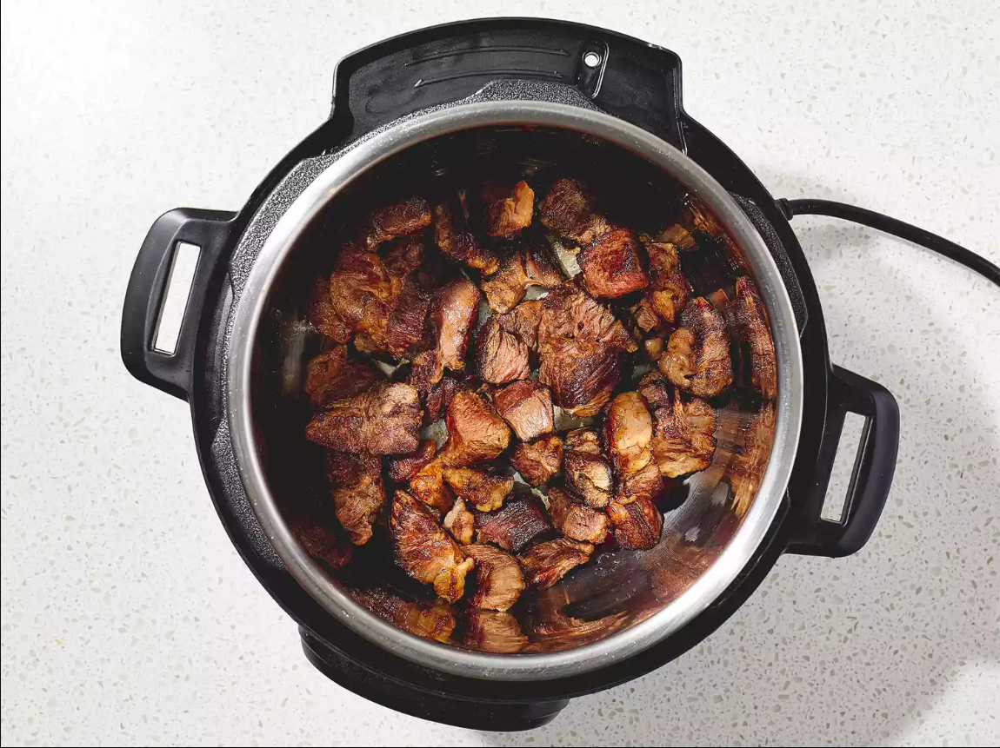
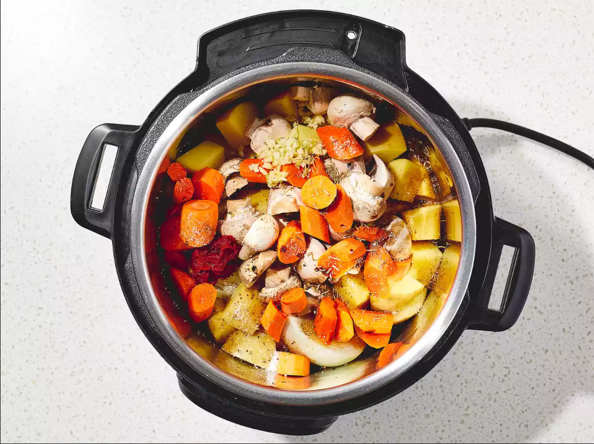

This Instant Pot stew recipe is the ultimate, hearty, melt-in-your-mouth comfort food. It's so easy to make in an Instant Pot for a simple midweek dinner.
Gather all ingredients.
Turn on a multi-functional pressure cooker (such as Instant Pot) and select the Sauté function. Melt butter in the pot. Cook beef chuck cubes in batches until browned on all sides, about 5 minutes per batch.
Return all beef chuck cubes to the pot. Add potatoes, mushrooms, onion, carrots, and garlic; cover with beef broth. Stir in Worcestershire sauce, tomato paste, salt, pepper, and rosemary.
Close and lock the lid. Select Meat/Stew function, according to the manufacturer's instructions; set the timer for 35 minutes. Allow 10 to 15 minutes for pressure to build.
Release pressure using the natural-release method, according to the manufacturer's instructions, 10 to 40 minutes. Unlock and remove the lid.